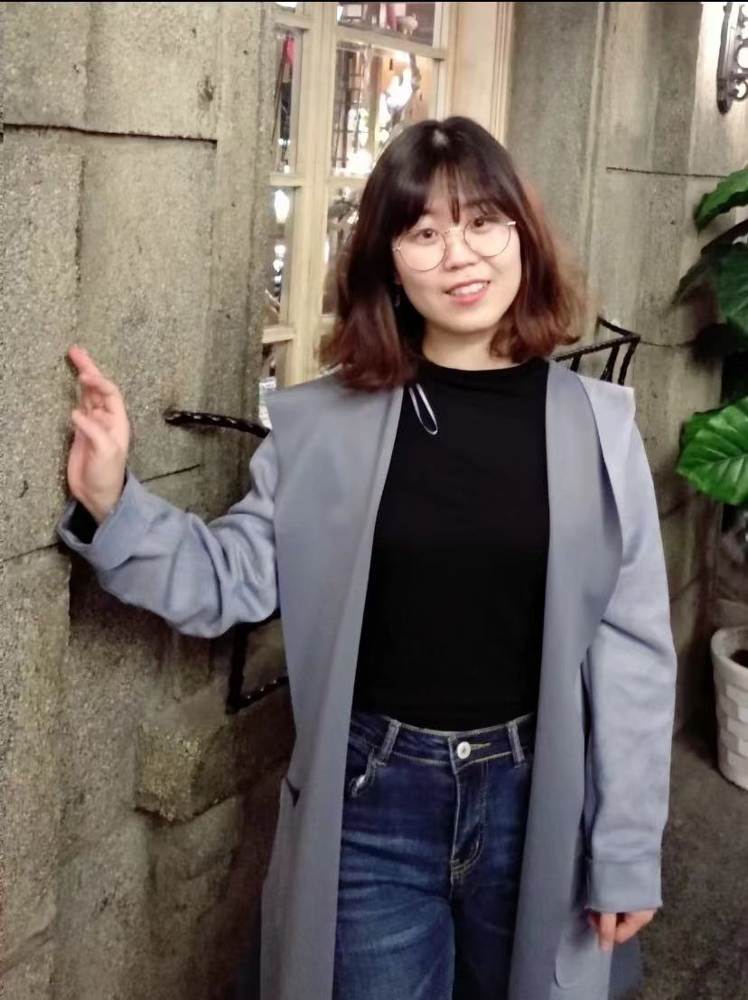

Assistant Professor
School of Computer Science and Technology
East China Normal University (华东师范大学)
Email: wangjing@cs.ecnu.edu.cn
Office: 华东师范大学普陀校区理科大楼
Address: 上海市中山北路3663号
Since 2026.03, I became an Assistant Professor in East China Normal University. In 2023, I got my Ph.D degree from Shanghai Jiao Tong University (SJTU). After graduation, I became a Postdoctoral Researcher in the School of Computer Science, working in Sustainable Architectures and Infrastructure Laboratory (SAIL) in Emerging Parallel Computing Center (EPCC).
Research Interests
My primary research area is Memory System for Emerging Application (short as MemSea). I work hard to build wisdom, high-performance, and sustainable memory subsystems for next-generation computer architectures on the basis of heterogeneous computing, memory, storage, and network devices. Our design can serve a variety of big-data applications, including multi-modality AI training, AI content generation (AIGC), large language model (LLM), retrieval-augmented generation (RAG), graph processing, metaverse, cloud gaming, scientific computing, and others.
We have made some progress on far memory system design, graph processing acceleration, resource scheduling in the cloud, task rearrangement at the edge, etc. Now, we are mainly working on the following fields:
- System design on flat disaggregated memory
- Acceleration of Graph-based AI workload
- Exploration of out-of-xPU memory architecture
- Compilation optimization of FPGA Architecture
(If you are interested in these research areas, please feel free to contact me now! Looking forward to your communication and joining!)
Work Experience
-
2026.03 – now
Assistant Professor, School of Computer Science and Technology, ECNU -
2024.01 – 2026.02
Postdoc. (Assistant Researcher), School of Computer Science, SJTU- SAIL lab in EPCC
- Cooperate with AI Institute of SJTU
- Co-Advisor: Chao Li, Xiaokang Yang
-
2018.9 – 2024.3
Ph.D., Computer Science and Technology, SJTU -
2014.9 – 2018.7
Bachelor, Software Engineering, NWPU- School of Software and Microelectronics in Northwestern Polytechnical University (NWPU)
Selected Honors
- Granted by Shanghai "Super Postdoc" Incentive Program, 2024–2026.
- Gold Award of China International College Students' Innovation Competition (CICSIC), 2023.
- National Champion of Dyson Design Award, 2022.
- Gold Award in Shanghai, China International College Students "Internet +" Innovation and Entrepreneurship Competition, 2022.
- Second Prize, the Second Weining Health Smart Healthcare Challenge, 2020.
- First Prize of BenchCouncil International Artificial Intelligence System Challenges, 2019.
- Second Prize of CCF TCARCH, 2019.
- Outstanding Thesis Award of NWPU, 2018.
- Outstanding Students Scholarship, National Encouragement Scholarship, NWPU, 2015–2017.
Academic Services
CCF Services
- 中国计算机学会体系结构专委 "执行委员"
- 中国计算机学会分布式系统专委 "执行委员"
- 中国计算机学会存储专委 "执行委员"
Activity Services
- Volunteer of CCF Chips 2024
- Web & Submission co-Chair of APPT (International Symposium on Advanced Parallel Processing Technology), 2021
- Online Host of ACA (Advanced Computer Architecture), 2020
- Student Volunteer of CIIF'20, NPC'19, YOCSEF'19
Reviewers
- TPDS
- TSUSC
- THPC
- Chips
- Associated Reviewer: MICRO, ISCA, HPCA, ASPLOS, SC, ICCD
Research Projects
1. Government Research Projects
动态图计算机的高效高层次综合系统
任务负责人
国家重点研发"青年科学家"项目, No.2024YFB4504300, 2024-12 至 2027-11.
面向稀疏神经网络的编程框架组件（已结题）
参与人
科学技术部高技术研究发展中心, 科技创新2030—重大项目子课题, No.2021AD010104, 2021-12 至 2024-11.
面向图计算的通用计算机技术与系统（已结题）
参与人
科技部, 国家重点研发项目, No.2018YFB1003503, 2018-05 至 2021-04.
2. National Research Funds
基于可重构智能芯片的多模态边缘计算关键技术与系统平台研究
主要参与人
国家自然科学基金委员会, 联合基金项目, No.U24A20234, 2025-01-01 至 2028-12-31.
面向数算融合的高效能计算系统理论与关键技术
主要参与人
国家自然科学基金委员会, 专项项目, No.62441225, 2025-01-01 至 2027-12-31.
多程序图计算下的可扩展异构资源管理（已结题）
参与人
国家自然科学基金委员会, 面上项目, No.61972247, 2020-01-01 至 2023-12-31.
3. Entrepreneurial Research Projects
内存高效的图检索增强生成技术研究
技术负责人
蚂蚁集团, CCF-蚂蚁科研基金图计算专项, CCF-AFSGRF20240205, 2024-08 至 2025-08.
基于异构共享内存池的高性能可扩展GPU图计算系统（已结题）
技术负责人
北京字跳网络技术有限公司, 学术合作项目, CT20230525001744, 2023-06 至 2024-05.
面向云视频处理的分离式内存资源分配优化（已结题）
技术负责人
阿里云计算有限公司, 阿里巴巴创新研究计划（AIR）项目, ATS54DHZ1210007, 2021-05 至 2022-05.